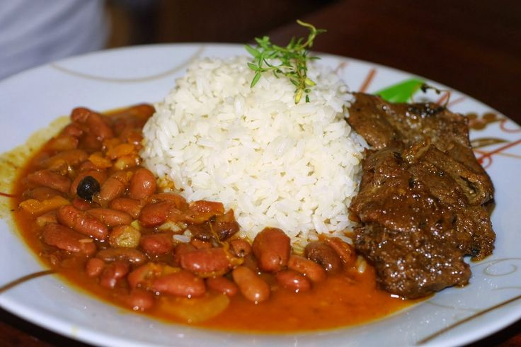

The Dominican Flag (La Bandera Dominicana)

Description
"La Bandera" is the traditional Dominican lunch consisting of white rice, stewed red kidney beans,
and stewed meat (usually chicken or beef). It is named "The Flag" because the colors of the ingredients mirror
the Dominican flag: white (rice), red (beans), and the meat representing the third color. It is typically served
with a side of fried plantains (tostones) and fresh salad.
ingredients
- 4 cups of cooked white rice
- 2 cups of red kidney beans (habichuelas rojas)
- 2 lbs of chicken or meat, cut into pieces
- Tomato paste
- 1 red onion and garlic (chopped)
- Herbs: Cilantro and oregano
Steps
- Season the chicken with oregano, onion, garlic, and salt. Brown it in a pot with a little oil and sugar until caramelized.
- Add water and tomato paste to the chicken, cover, and simulate until tender.
- In a separate pot, sauté garlic and herbs, add the boiled beans, and let them simmer until the sauce thickens to a creamy consistency.
- Serve the hot rice, beans, and meat side-by-side on a plate.
Home